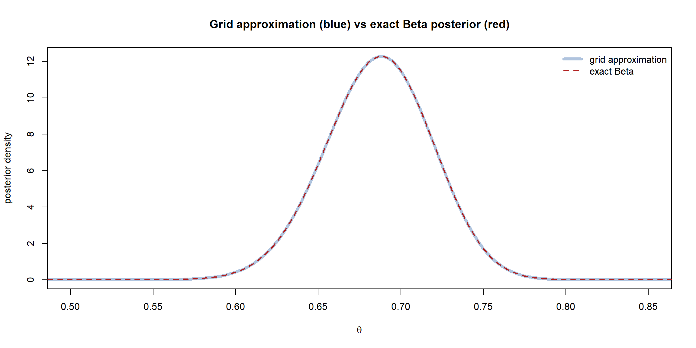
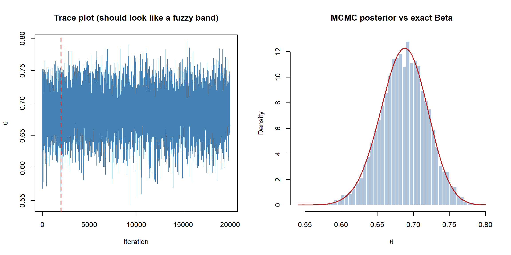

flowchart TD
Q["I have posterior ∝ likelihood × prior,<br/>but the evidence integral is intractable."]
Q --> G{"How many parameters?"}
G -->|"1–2"| GR["Grid approximation:<br/>evaluate on a fine grid,<br/>normalise numerically"]
G -->|"many"| MC["MCMC:<br/>draw samples from the posterior<br/>without ever normalising it"]
Bayesian Computation: Grid Approximation and MCMC
So far every posterior has been a tidy Beta we could write down by hand, because the coin model is conjugate. That is the exception. For almost any realistic model the evidence integral \(p(\text{data}) = \int p(\text{data}\mid\theta)\,p(\theta)\,d\theta\) has no closed form, so the posterior has no formula — and yet we still need to summarise it. This page is the Bayesian twin of the frequentist Simulation page: when the algebra runs out, we let the computer do the work. We meet two tools — grid approximation and Markov chain Monte Carlo (MCMC) — and validate them on the coin, where we already know the exact answer.
We only need the posterior up to a constant
The key liberating fact: we almost never need the evidence \(p(\text{data})\) itself. Every posterior summary — mean, credible interval, the probability \(\theta\) exceeds some value — can be computed from samples of \(\theta\) drawn in proportion to the unnormalised posterior \(p(\text{data}\mid\theta)\,p(\theta)\). Both methods below exploit this: grid approximation normalises numerically over a grid, and MCMC sidesteps the constant entirely by only ever comparing ratios of the posterior, in which the constant cancels.
Grid approximation
The most transparent method. Lay down a fine grid of \(\theta\) values, evaluate (unnormalised) prior \(\times\) likelihood at each, and normalise the resulting heights so they sum to one. That discretised posterior can then be summarised directly or sampled from. It is exact in the limit of a fine enough grid — but only practical in one or two dimensions, because a grid of \(g\) points per parameter needs \(g^p\) evaluations and explodes with the number of parameters \(p\) (the curse of dimensionality).
NoteIn a nutshell: the curse, with numbers
Suppose you use a modest 10 grid points per parameter. With 5 parameters that is \(10^5 = 100{,}000\) evaluations — still doable. But the exponent is the killer: 10 parameters needs ten billion, and 20 parameters needs \(10^{20}\), more than any computer will ever finish. Each extra parameter multiplies the work by 10, so grids run out of road almost immediately — which is why we need MCMC.
Code
```{r}
#| warning: false
#| message: false
#| fig-align: center
set.seed(1)
trueTheta <- 0.7
n <- 200
k <- sum(rbinom(n, 1, trueTheta))
aPri <- 2; bPri <- 2
# 1. a grid of candidate theta values
grid <- seq(0, 1, length.out = 1000)
# 2. unnormalised posterior = prior × likelihood at each grid point
unnorm <- dbeta(grid, aPri, bPri) * dbinom(k, n, grid)
# 3. normalise so the heights form a proper (discrete) distribution
postGrid <- unnorm / sum(unnorm)
# Overlay the exact conjugate Beta posterior to check the grid is right
plot(grid, postGrid / diff(grid)[1], type = "l", lwd = 5,
col = "lightsteelblue", xlim = c(0.5, 0.85),
xlab = expression(theta), ylab = "posterior density",
main = "Grid approximation (blue) vs exact Beta posterior (red)")
lines(grid, dbeta(grid, aPri + k, bPri + n - k),
lwd = 2, col = "firebrick", lty = 2)
legend("topright", bty = "n", lwd = c(5, 2), lty = c(1, 2),
col = c("lightsteelblue", "firebrick"),
legend = c("grid approximation", "exact Beta"))
```
The grid (thick blue) sits exactly under the closed-form Beta (red dashed) — reassurance that the numerical recipe is faithful. Once we have the grid posterior, summaries are just weighted sums, or we can sample from the grid and treat the draws like any data:
Code
```{r}
# Draw posterior samples by sampling grid points with their posterior weights
samples <- sample(grid, size = 50000, replace = TRUE, prob = postGrid)
c(postMean = mean(samples),
cred_lower = quantile(samples, 0.025),
cred_upper = quantile(samples, 0.975))
``` postMean cred_lower.2.5% cred_upper.97.5%
0.6862764 0.6206206 0.7477477 These match the analytic posterior mean and credible interval from the previous page — computed without a single integral.
Markov chain Monte Carlo (MCMC)
Grid approximation dies in high dimensions. The workhorse that does not is MCMC: instead of covering the whole parameter space, we take a guided random walk through it that visits each region in proportion to its posterior probability. Record where the walk goes, and the collection of visited points is a sample from the posterior — even though we never normalised it.
The Metropolis algorithm
The simplest MCMC method is the Metropolis algorithm. From the current position \(\theta\):
- Propose a nearby move \(\theta'\) (e.g. a small random step).
- Score it by the posterior ratio \(r = \dfrac{p(\theta'\mid\text{data})}{p(\theta\mid\text{data})} = \dfrac{p(\text{data}\mid\theta')\,p(\theta')}{p(\text{data}\mid\theta)\,p(\theta)}\) — the intractable evidence cancels.
- Accept the move with probability \(\min(1, r)\): always step to a more probable place, and step to a less probable one only sometimes. Otherwise stay put.
- Record the position and repeat.
Always climbing toward higher posterior, but occasionally tolerating a downhill step, is exactly what makes the walk explore the whole distribution rather than collapsing onto the peak.
flowchart LR
C["current θ"] --> P["propose θ'<br/>= θ + small step"]
P --> R["ratio r = posterior(θ') / posterior(θ)<br/>(evidence cancels)"]
R --> A{"accept with<br/>prob min(1, r)?"}
A -->|"yes"| M["move to θ'"]
A -->|"no"| S["stay at θ"]
M --> C
S --> C
We code it from scratch for the coin — working on the log scale for numerical stability, exactly as the frequentist section did with log-likelihoods — and check the chain reproduces the known Beta posterior.
Code
```{r}
#| warning: false
#| message: false
set.seed(42)
# log unnormalised posterior = log prior + log likelihood
logPost <- function(theta) {
if (theta <= 0 || theta >= 1) return(-Inf) # outside the support
dbeta(theta, aPri, bPri, log = TRUE) +
dbinom(k, n, theta, log = TRUE)
}
metropolis <- function(start, nIter, stepSd) {
chain <- numeric(nIter)
current <- start
lpCur <- logPost(current)
nAcc <- 0
for (i in seq_len(nIter)) {
proposal <- current + rnorm(1, 0, stepSd) # symmetric random-walk step
lpProp <- logPost(proposal)
# accept on the log scale: log r = lpProp - lpCur
if (log(runif(1)) < lpProp - lpCur) {
current <- proposal
lpCur <- lpProp
nAcc <- nAcc + 1
}
chain[i] <- current
}
list(chain = chain, acceptance = nAcc / nIter)
}
fit <- metropolis(start = 0.5, nIter = 20000, stepSd = 0.05)
fit$acceptance # acceptance rate (aim for roughly 0.2–0.5)
```[1] 0.57725
NoteIn a nutshell: the loop, line by line
The function looks dense, but each line is one of the four algorithm steps above:
| Code | What it does |
|---|---|
proposal <- current + rnorm(1, 0, stepSd) |
Step 1 — propose a small random step from where we are |
lpProp <- logPost(proposal) |
Step 2 — score the proposed spot (on the log scale) |
if (log(runif(1)) < lpProp - lpCur) |
Step 3 — accept? |
current <- proposal |
…if accepted, move there; otherwise the line is skipped and we stay put |
chain[i] <- current |
Step 4 — record the position and repeat |
The one piece of trickery is the accept test. We want to accept with probability \(\min(1, r)\) where \(r\) is the posterior ratio. Taking logs, “accept with probability \(r\)” becomes “accept if a random \(\log(\text{uniform})\) falls below \(\log r = \texttt{lpProp} - \texttt{lpCur}\).” Working in logs is just the same numerical-stability trick the frequentist section used for log-likelihoods.
Reading the chain: trace plot, burn-in, and the posterior
A chain needs inspecting before it is trusted. The trace plot — the value against iteration — should look like a fuzzy horizontal band (“good mixing”), not a slow wander or a flat line. The first stretch, before the walk forgets its starting point, is burn-in and is discarded.
Code
```{r}
#| fig-align: center
par(mfrow = c(1, 2))
# Trace plot
plot(fit$chain, type = "l", col = "steelblue",
xlab = "iteration", ylab = expression(theta),
main = "Trace plot (should look like a fuzzy band)")
abline(v = 2000, col = "firebrick", lwd = 2, lty = 2) # end of burn-in
# Posterior: MCMC samples vs the exact Beta
draws <- fit$chain[-(1:2000)] # drop burn-in
hist(draws, breaks = 40, freq = FALSE, col = "lightsteelblue", border = "white",
xlab = expression(theta), main = "MCMC posterior vs exact Beta")
curve(dbeta(x, aPri + k, bPri + n - k), add = TRUE,
col = "firebrick", lwd = 2)
par(mfrow = c(1, 1))
```
The trace is a healthy band, and the histogram of post-burn-in draws lies under the exact Beta — the hand-rolled sampler has recovered the right posterior. Now the summaries come straight from the draws, just as in the frequentist bootstrap:
Code
```{r}
c(postMean = mean(draws),
cred_lower = quantile(draws, 0.025),
cred_upper = quantile(draws, 0.975))
``` postMean cred_lower.2.5% cred_upper.97.5%
0.6866838 0.6194929 0.7499992
TipMaking MCMC behave
- Tune the step size. Too small and the chain inches along (acceptance near 1, but highly correlated draws); too large and almost everything is rejected (acceptance near 0). A random-walk acceptance rate around 0.2–0.5 is the usual target.
- Discard burn-in. Throw away the initial transient before the chain reaches the posterior.
- Run more than one chain from different starts and check they agree — the standard convergence diagnostic (\(\hat R\), which should be near 1).
- Watch autocorrelation. Successive draws are dependent, so \(N\) MCMC draws carry less information than \(N\) independent ones; the effective sample size measures how many you effectively have.
- Set a seed for reproducibility, exactly as on the frequentist simulation page.
NoteIn a nutshell: the three diagnostic words
- \(\hat R\) (R-hat) — compares several chains; if it is ≈ 1 the chains agree and have likely converged, while values noticeably above 1 mean they have not.
- Effective sample size (ESS) — roughly how many independent draws your correlated chain is worth; e.g. 10,000 draws might only count as 800.
- Autocorrelation — how much each draw resembles the one just before it; high autocorrelation lowers the ESS, because nearby draws repeat similar information.
TipGoing further 🚀
You do not have to compute these diagnostics by hand. The coda package works on any MCMC object, and bayesplot gives publication-ready visuals:
Code
```{r}
#| eval: false
library(coda); library(bayesplot)
ch <- as.mcmc(fit$chain)
effectiveSize(ch) # effective sample size
gelman.diag(samp) # R-hat (needs an mcmc.list of several chains)
autocorr.plot(ch) # autocorrelation by lag
mcmc_trace(samp) # trace plots for all chains
mcmc_areas(samp) # shaded posterior densities with credible intervals
```In practice: let a probabilistic programming language do it
Hand-coding a Metropolis sampler is the right way to understand MCMC, but for real models nobody writes their own — you describe the model and a probabilistic programming language (PPL) builds and runs a far more efficient sampler (typically Hamiltonian Monte Carlo) automatically. The beauty is that the code reads almost exactly like the maths: state the prior, state the likelihood, and the machine returns posterior draws.
The example below uses JAGS (via the rjags package) on our coin. Notice the model block is a near-literal transcription of “\(\theta \sim \text{Beta}(2,2)\); \(k \sim \text{Binomial}(n,\theta)\)” — prior then likelihood, the whole of Bayes’ theorem in two lines. It is set to eval: false so this page renders without the dependency, but it produces the same posterior as our grid and Metropolis results above.
Code
```{r}
#| eval: false
library(rjags)
# The model: prior + likelihood, written declaratively
modelString <- "
model {
theta ~ dbeta(2, 2) # prior
k ~ dbin(theta, n) # likelihood
}
"
model <- jags.model(textConnection(modelString),
data = list(k = k, n = n),
n.chains = 3) # three chains for convergence checks
update(model, 1000) # burn-in
samp <- coda.samples(model, "theta", n.iter = 10000)
summary(samp) # posterior mean, SD, credible interval
plot(samp) # trace + density, all chains
gelman.diag(samp) # R-hat convergence diagnostic (≈ 1 is good)
```The same model can be expressed in Stan (via rstan/cmdstanr), or fitted without writing any model code at all through higher-level packages like rstanarm and brms, which translate ordinary R model formulas (y ~ x) into Stan behind the scenes. These tools scale to the multi-parameter, non-conjugate models where grid approximation is hopeless and a hand-written Metropolis sampler would mix too slowly — but every one of them is doing exactly what we did by hand: sampling from posterior \(\propto\) likelihood \(\times\) prior.
Summary
| Method | Idea | Good for | Limitation |
|---|---|---|---|
| Grid approximation | Evaluate prior×likelihood on a grid, normalise | 1–2 parameters; total transparency | Explodes with dimension |
| Metropolis MCMC | Guided random walk accepting by posterior ratio | Many parameters; needs only ratios | Must tune, burn in, check convergence |
| PPL (JAGS/Stan/brms) | Declare the model, sampler is automatic | Real, complex models | A software dependency |
The guiding principle mirrors the frequentist page exactly: use the closed form when conjugacy gives you one; reach for grid or MCMC the moment the evidence integral becomes intractable. With samples from the posterior in hand, every question — estimation, intervals, prediction, and the hypothesis tests of the next page — is answered by simple operations on those draws.